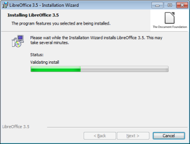
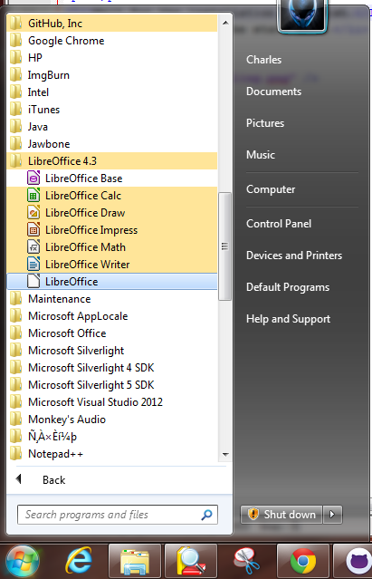

<article data-hd-class="task"> 
<h1>{{ page.title }}</h1> 
<p>For Windows users:</p> 

<section data-hd-class="task/steps-informal"> 
<h2>Download and Installation Steps</h2>
<ol> 
<li>Go to <a href="http://www.libreoffice.org">libreOffice's official site</a> in web browser.</li> 
<li>Click the big "Download Now" button on LibreOffice homepage.</li>
<li>Under Main Installer click on "Download Version 4.3."</li>
<li>save the file to your desired location and open it.</li>
<li>Keep click "next" and follow the instruction on the installation wizard window until it began installation.</li>
<p> </p>

<p> </p>
<li>Wait for the installation to finish.</li>
<li>Open program from the start menu.</li>

<p> </p>

<p> </p>
<p> </p>
</section>
</article>
